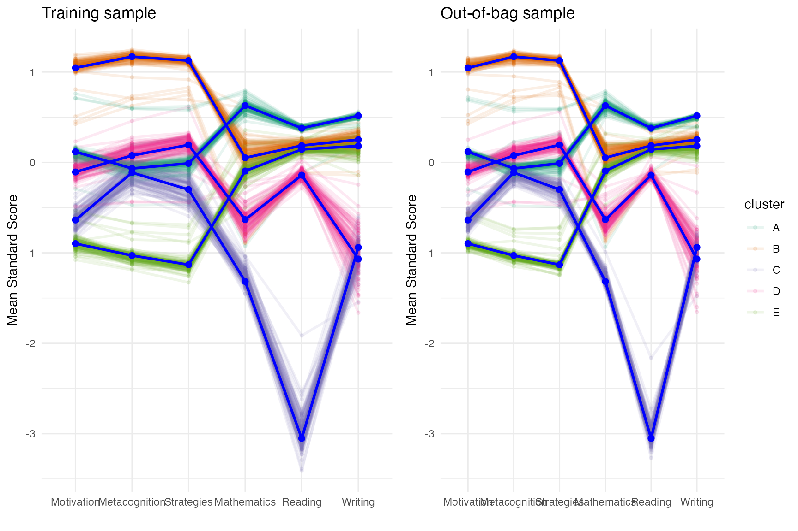
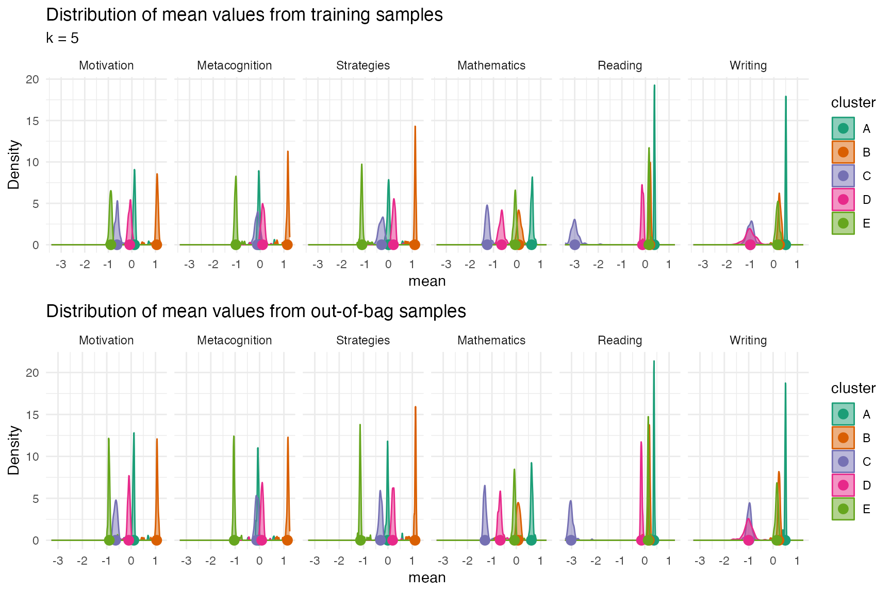
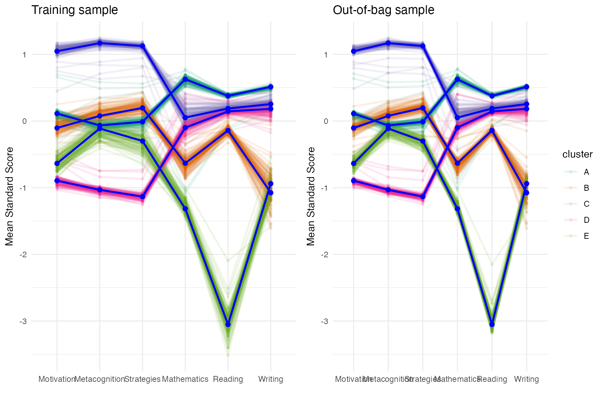
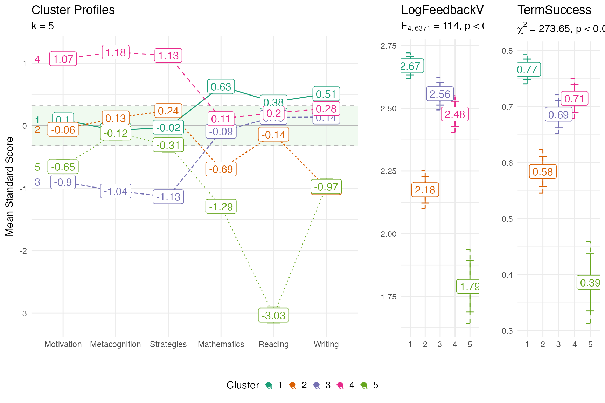

This vignette outlines the analysis for the paper Identifying and Distinguishing College Readiness Profiles Across Academic Outcomes: The Importance of Integrating Academic Skills and Self-Regulated Learning by Timothy J. Cleary, Jason Bryer, Elie ChingYen Yu presented at AERA 2025.
data(daacs)
cluster_vars <- c('Motivation', 'Metacognition', 'Strategies', 'Mathematics', 'Reading', 'Writing')
daacs <- daacs |>
dplyr::mutate(LogFeedbackViews = log(daacs$FeedbackViews)) |>
dplyr::mutate(dplyr::across(dplyr::all_of(cluster_vars), clav::scale_this))Finding the desired number of clusters
optimal <- optimal_clusters(daacs[,cluster_vars], max_k = 6)
optimal
#> k wss silhoutte gap calinski_harabasz davies_bouldin rand_index
#> 1 1 38250.00 NA 0.9134492 NaN NaN NA
#> 2 2 29868.66 0.2001269 0.8822160 1788.585 1.886276 0.5002855
#> 3 3 25052.91 0.2025981 0.8978628 1678.549 1.634979 0.7516727
#> 4 4 22790.00 0.1524237 0.8817384 1441.386 1.766747 0.8183650
#> 5 5 20747.34 0.1634359 0.9043772 1343.563 1.630104 0.7633536
#> 6 6 19198.02 0.1651130 0.9157450 1264.325 1.578091 0.9032546
plot(optimal, ncol = 2)
Validating cluster solution
cv <- cluster_validation(daacs[,cluster_vars],
n_clusters = 5)
plot(cv, facet = FALSE)
plot_distributions(cv, plot_in_sample = TRUE, plot_oob_sample = TRUE)
cv_boot <- cluster_validation(daacs[,cluster_vars],
n_clusters = 5,
sample_size = nrow(daacs),
replace = TRUE)
plot(cv_boot, facet = FALSE)
Profile plots
fit <- stats::kmeans(daacs[,cluster_vars], centers = 5)
profile_plot(daacs[,cluster_vars],
clusters = fit$cluster,
df_dep = daacs[,c('LogFeedbackViews', 'TermSuccess')],
cluster_order = cluster_vars)